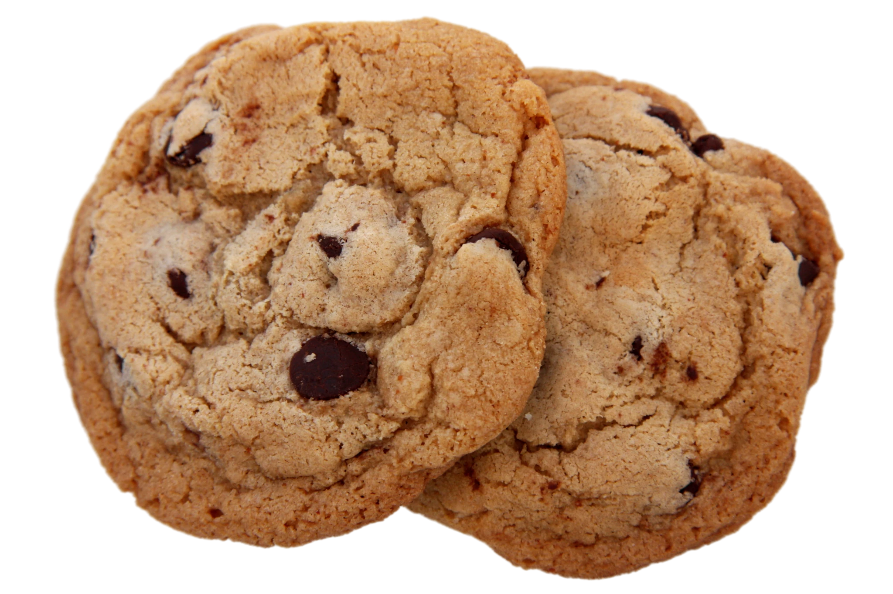

Introducing
Cocokies
Crafted from Coconut, Created for Cookie Lovers.


Introducing
Crafted from Coconut, Created for Cookie Lovers.
Discover More
Cocokies dari Sall Cookies menawarkan camilan sehat berbahan dasar ampas kelapa, yang merupakan hasil sampingan dari proses pembuatan santan. Dengan tekstur renyah dan rasa gurih alami dari kelapa, cookies ini kaya akan serat, protein, dan lemak sehat, menjadikannya pilihan yang bernutrisi. Selain itu, Cocokies juga mendukung upaya ramah lingkungan dengan memanfaatkan sisa bahan makanan secara optimal. Ideal untuk dinikmati bersama teh atau kopi, Cocokies adalah pilihan tepat bagi siapa saja yang menginginkan camilan lezat dan bermanfaat bagi kesehatan.
Keunggulan produk cookies ampas kelapa antara lain:
-Ramah lingkungan: Menggunakan ampas kelapa yang merupakan limbah dari
proses pembuatan santan, membantu mengurangi limbah makanan.
-Kaya serat: Ampas kelapa mengandung serat tinggi yang baik untuk
pencernaan.
-Rendah gluten: Cocok bagi orang yang menghindari atau sensitif
terhadap gluten.
Sehat dan bergizi: Mengandung lemak sehat dan protein yang bermanfaat
bagi tubuh.
-Rasa unik dan alami: Cookies ini menawarkan rasa gurih dan renyah
alami dari kelapa, berbeda dari cookies pada umumnya.
Get in Touch